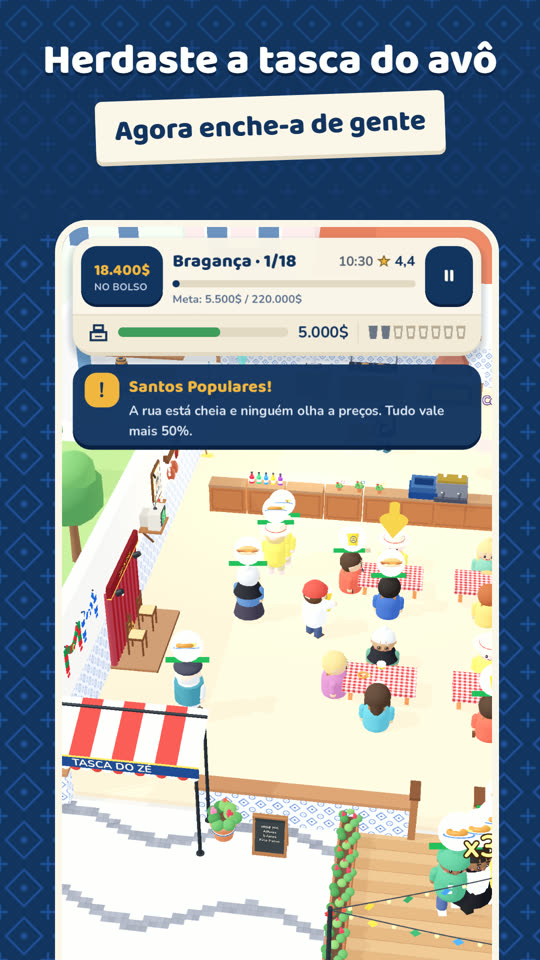
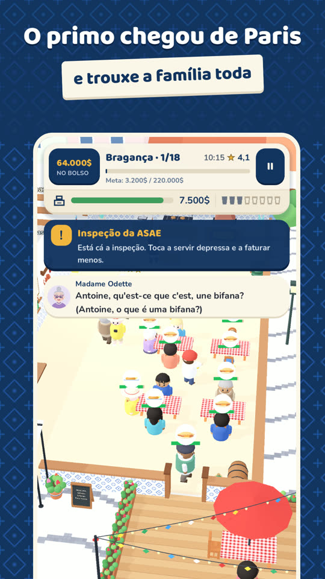
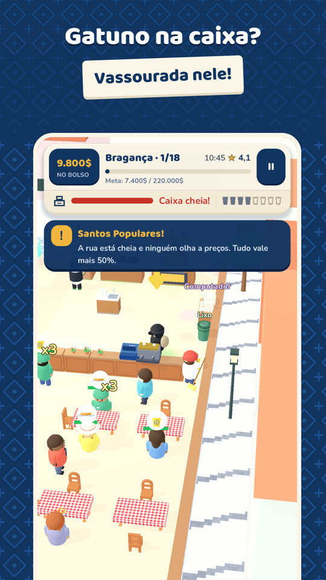
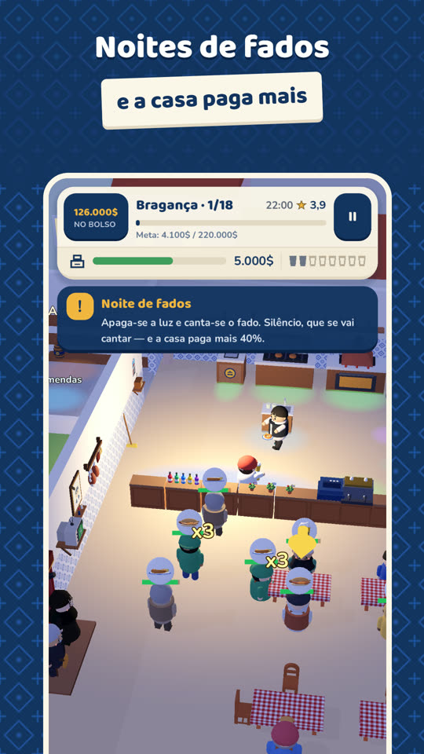
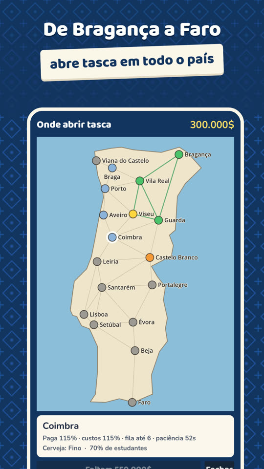

Ajuda a abrir a tasca
A Tasca do Zé está quase na Play Store, mas a Google só a deixa entrar depois de um grupo de pessoas a testar durante duas semanas. Precisamos de ti!
«Zé, o país é grande.»
Herdaste a tasca do avô em Bragança. Tira finos, serve bifanas e alheiras, leva o bêbedo à porta, enxota o gatuno à vassourada e abre tasca em todo o país, de Bragança a Faro, cada terra com a sua especialidade. Há Santos Populares, Queima das Fitas, caloiradas e o primo que vem de França encher as mesas.
Como ajudar, em quatro passos
- 1Entra no grupo de testadores, com a conta Google que usas no telemóvel. É só carregar em «Aderir ao grupo».
Entrar no grupo - 2Aceita o convite do teste, com a mesma conta. A página diz «Tornar-se testador». Damos acesso a quem entra no grupo à mão, por isso pode levar até um dia: se a página disser que não tens acesso, volta mais tarde.
Aceitar o convite - 3Instala o jogo pela Play Store, como outro qualquer. Pode demorar uns minutos a aparecer depois de aceitares.
Abrir na Play Store - 4Joga um bocadinho todos os dias, durante duas semanas. Não é preciso muito: abrir, tirar uns finos, ver como vai a tasca. Se encontrares algum problema ou tiveres uma ideia, deixa a tua opinião na página do jogo na Play Store, ou escreve-nos.
Como é por dentro





O jogo é grátis e não precisas de criar conta nenhuma. Para sair do teste, basta voltar à página do convite e carregar em «Sair do programa».